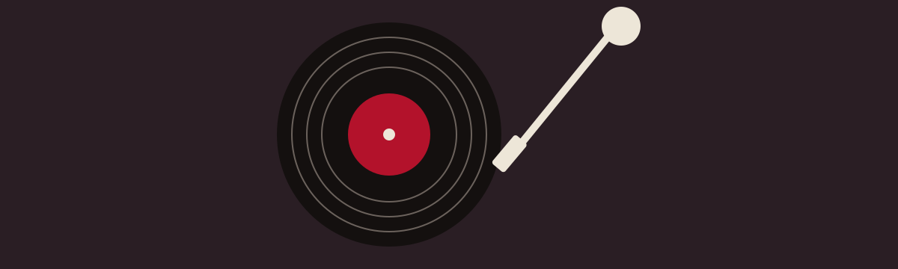

Top songs
Ten fan favorites. Rankings are personal, so argue with me about the order.
- King for a DayCollide with the Sky, 2012 (feat. Kellin Quinn)
- CarapherneliaSelfish Machines, 2010
- Bulletproof LoveCollide with the Sky, 2012
- Hold On Till MayCollide with the Sky, 2012
- I'm Low on Gas and You Need a JacketCollide with the Sky, 2012
- Texas Is ForeverMisadventures, 2016
- The Divine ZeroMisadventures, 2016
- CirclesMisadventures, 2016
- Pass the NirvanaThe Jaws of Life, 2023
- Million Dollar Houses (The Painter)Selfish Machines, 2010